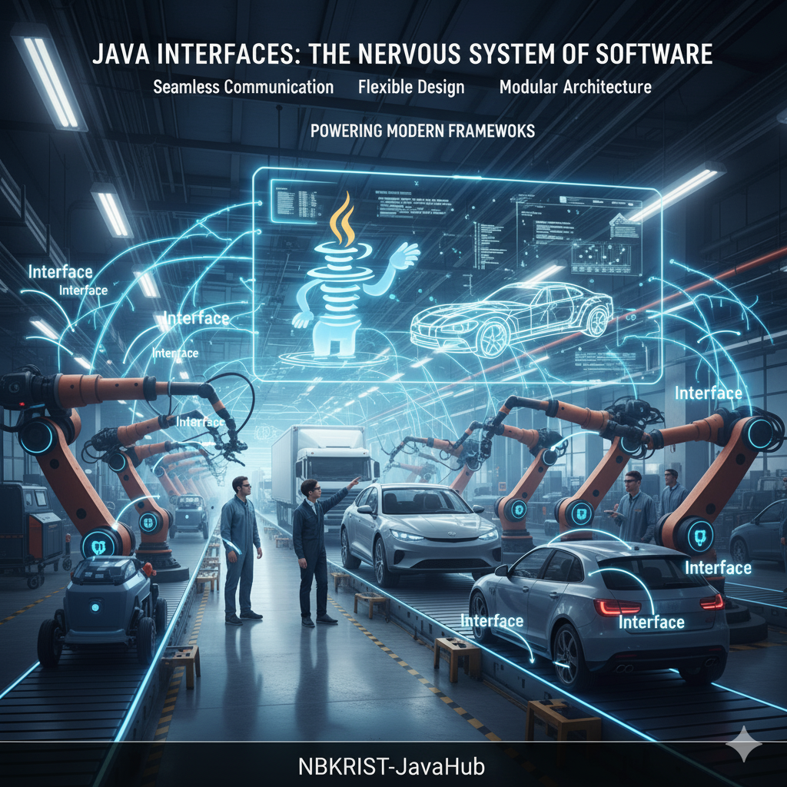

Having witnessed the extensive use of interfaces in real-world software development throughout my career as an IT professional, I often tell students that understanding interfaces is like understanding the nervous system of Java — they enable seamless communication and consistency across every component. Interfaces act as elegant connectors, ensuring flexibility, security, and clarity in design. They form the very foundation of modern frameworks and layered architectures, silently powering the structure beneath the surface.
I have seen how APIs gracefully expose their capabilities to the external world through interfaces — a perfect blend of abstraction and control. Once you truly grasp interfaces, you begin to see Java not just as a language, but as a beautifully organized system of collaboration between components.

A Java Interface is a contract or blueprint that defines what a class must do but not how it does it. It contains abstract methods (without implementation) and constants. Any class that implements the interface must provide concrete implementations for its abstract methods.
Technical Definition: An interface in Java is a reference type that defines a contract of abstract methods and constants, specifying behaviors that a class must implement. It provides a way to achieve abstraction and multiple inheritance while ensuring loose coupling between components.
In the context of manufacturing systems, interfaces allow different machine modules, sensors, or assembly components to communicate under a common contract, enhancing modularity and reusability.
An interface defines a set of behaviors that multiple classes can implement. It acts as a blueprint for communication between different types of machines or subsystems.
Once an interface is defined, any class can implement it and provide concrete definitions. This enables code consistency and reduces redundancy across manufacturing components.
When a class implements multiple interfaces, it combines capabilities from different domains, similar to how a factory machine integrates sensors and actuators to work together.
Nested interfaces represent logical groupings of functionalities within a system, such as machine-level operations inside a larger factory system.
One interface can extend another, just like specialized manufacturing lines evolve from a general assembly unit to specific stations for tasks like engine fitting or painting.
Through interfaces, Java supports multiple inheritance safely. This allows components like robotic arms to inherit functionalities from both control and monitoring systems.